This document provides a high-level overview of the cryptocurrency trading signals platform's core architectural components, dependency injection system, and how the major subsystems interact to deliver AI-powered trading insights and automated signal processing.
For detailed information about the AI agent swarm system, see AI Agent Swarm System. For specific web service implementations and external integrations, see Web Services and External Integrations. For frontend application architecture, see Frontend Applications.
The platform follows a service-oriented architecture built around a custom IoC (Inversion of Control) container that manages dependency injection across all system components. The architecture separates concerns into distinct service layers, each responsible for specific business functions.

The system uses a custom dependency injection framework centered around the TYPES symbol registry and service provider pattern. All services are registered during application bootstrap and resolved through the IoC container.

Services are organized into logical categories, each handling specific aspects of the trading platform's functionality. This modular approach enables clear separation of concerns and testability.
| Service Category | Purpose | Key Services |
|---|---|---|
| Base Services | Core infrastructure and utilities | BootstrapService, ErrorService, MongooseService, RedisService |
| API Services | External API communication | MastodonApiService, TelegramApiService |
| Math Services | Technical analysis calculations | LongRangeMathService, SwingRangeMathService, ShortRangeMathService |
| Database Services | Data persistence and retrieval | SignalDbService, OrderOpenDbService, OrderCloseDbService |
| Web Services | HTTP integrations and webhooks | MastodonWebService, TelegramWebService |
| Logic Services | Business rule processing | SignalLogicService, SignalValidationService |
| Job Services | Automated background processing | SignalJobService |
| Report Services | Data analysis and reporting | SignalReportService, BalanceReportService, HumanReportService |
The system uses environment-based configuration with fallback defaults, centralized in the params module. Configuration covers database connections, external API credentials, trading parameters, and application feature flags.

The architecture implements several key patterns for service integration and data flow. Services communicate through well-defined interfaces and dependency injection, enabling loose coupling and testability.

The system includes automated job processing capabilities that run signal analysis and execution logic on configurable intervals. The SignalJobService orchestrates the automated trading workflow.

The system defines clear data transfer objects (DTOs) and database models for all major entities. The architecture supports both transactional data (orders, signals) and analytical data (reports, metrics).
| Entity Type | DTO Interface | Database Service | Purpose |
|---|---|---|---|
| Trading Signals | ISignalDto |
SignalDbService |
Buy/sell signal management |
| Open Orders | IOrderOpenDto |
OrderOpenDbService |
Active trade positions |
| Closed Orders | IOrderCloseDto |
OrderCloseDbService |
Completed trades |
| Information | IInfoDto |
InfoDbService |
System events and logs |
| Reports | IReportDto |
ReportDbService |
Analysis and insights |